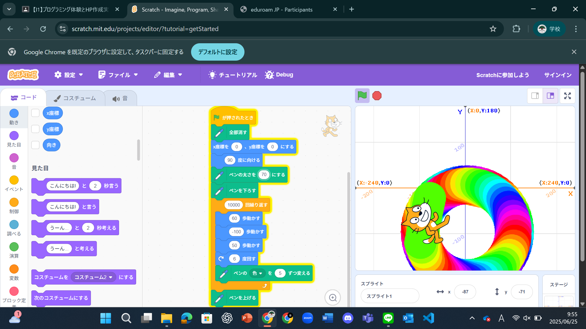
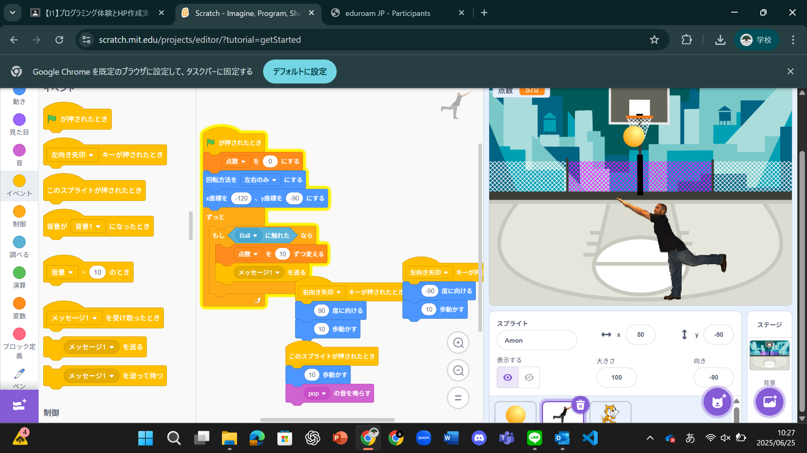

1週目のレポート ： 公大高専１年実習I-1
2a班11番 諭吉
第1週目
1-1 サイエンスアート

1.内容
スクラッチを用いて猫を移動させて、移動出させた道に色を付ける設定にした。
その移動できる道を設定して独自の絵にしていった
みんないずれも一歩進んで回転して円を作っていた
2.感想
僕は以前、スクラッチをして遊んでいた経験があったが、
久々の利用だったため忘れていたところもあり、初心に帰って学ぶことができた。
1-2 ゲーム

1.内容
スクラッチを用いて落下物をキャッチさせるゲームを作った。
絵を描く時よりも自由度が高く、おのおのでオリジナリティが出ていた。
2.感想
やっている内容はとてもシンプルであったが、まだ使ったことのない機能があると知ったので、新鮮味を感じた。
見たところ、まだまだ知らないところがあったので個人の活動でも使ってみたいと思った。
1-3 ホームページ作成
私のホームページ
1.内容
Githubを用いて軽い自己紹介のホームページを作った
Githubにあるテンプレートのものを編集して自己紹介ホームページを作った
2.感想
始める前は自分がホームページを作れるわけないだろうと思っていたが、
手順通りとはいえ、作業をしたら作れたので、とても達成感があり、楽しかった。
今後プログラミングをするきっかけになったと思う。
各ページへのリンク
1週目のレポート
2週目のレポート
3週目のレポート
私のホームページ